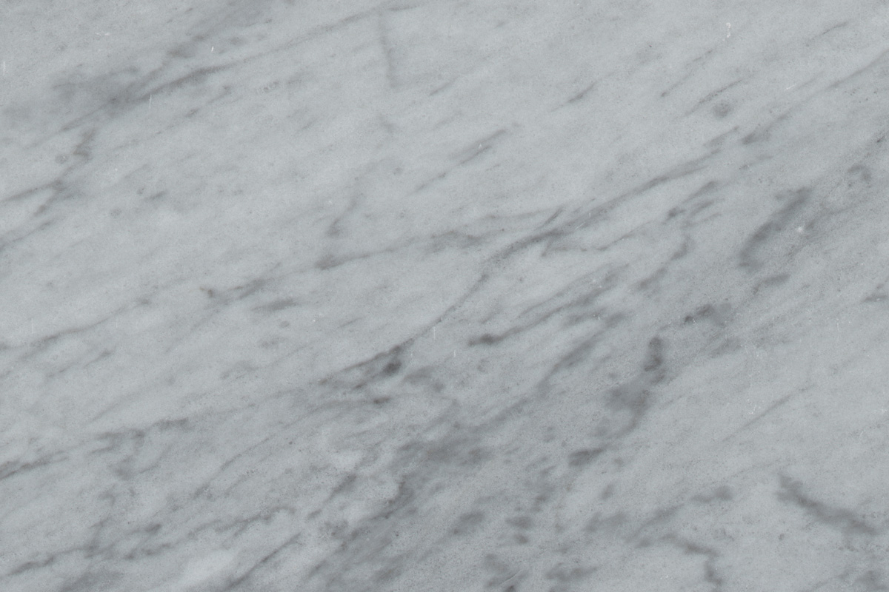
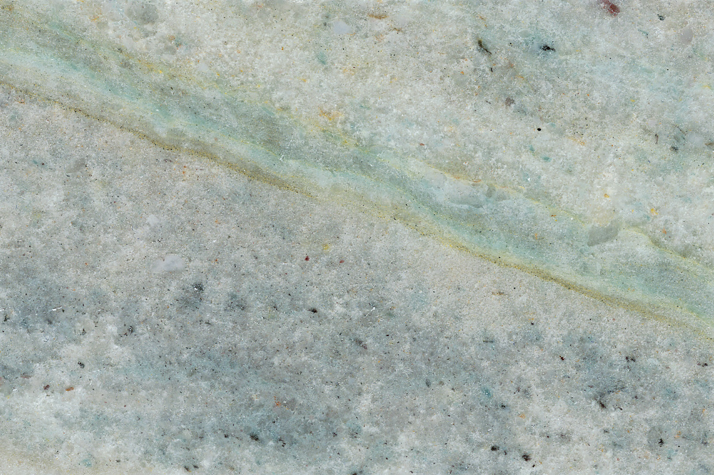
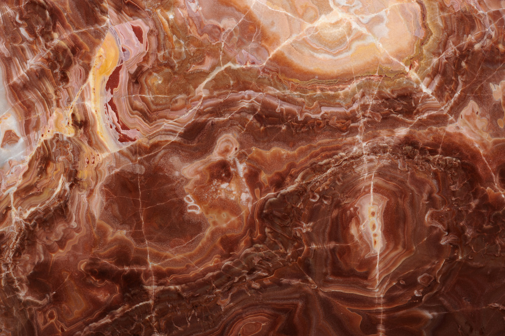
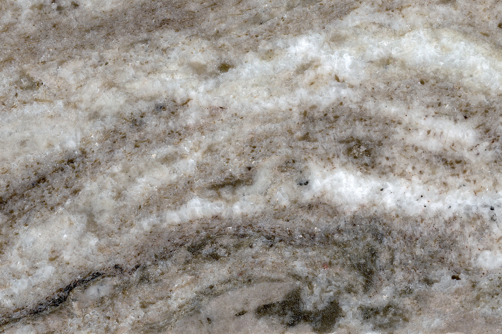
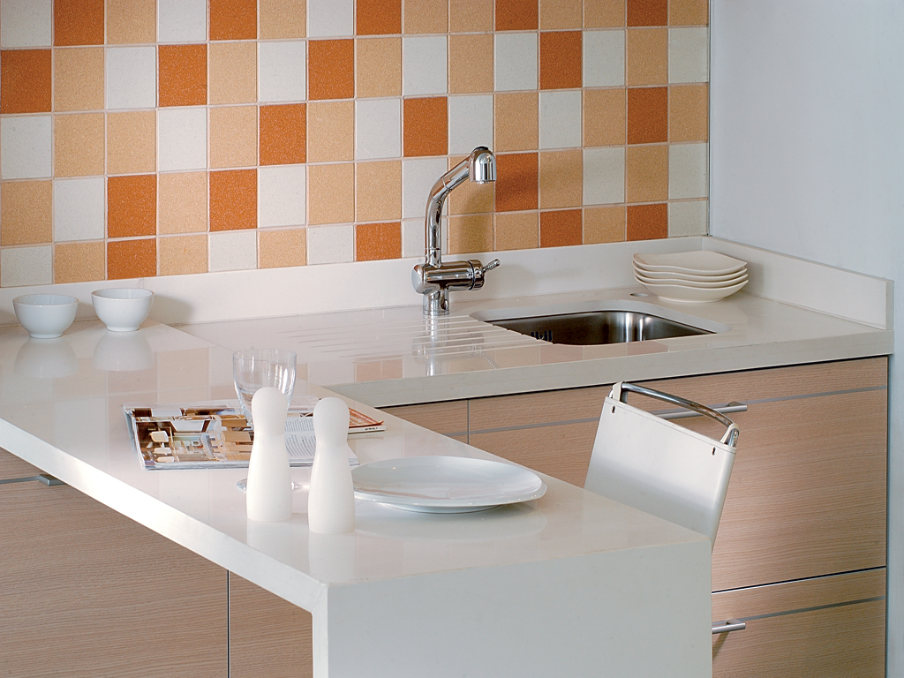
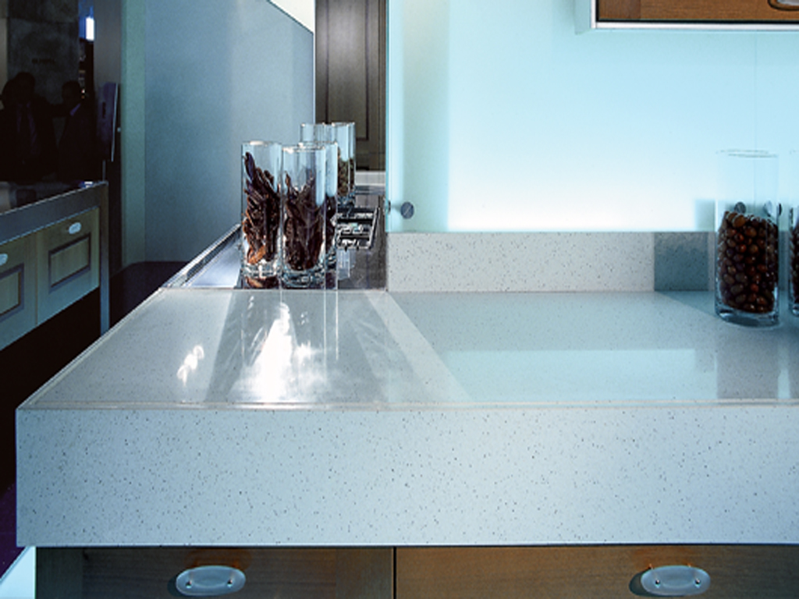
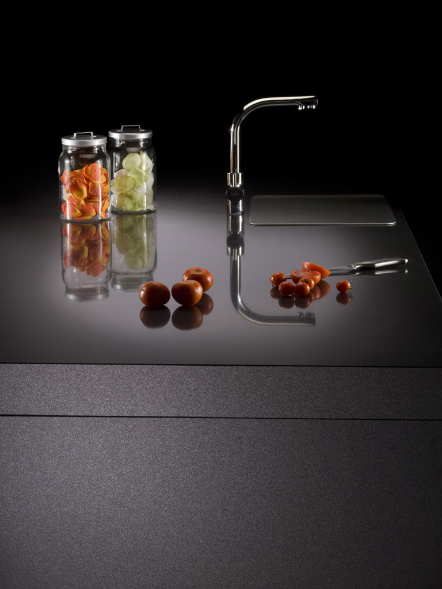
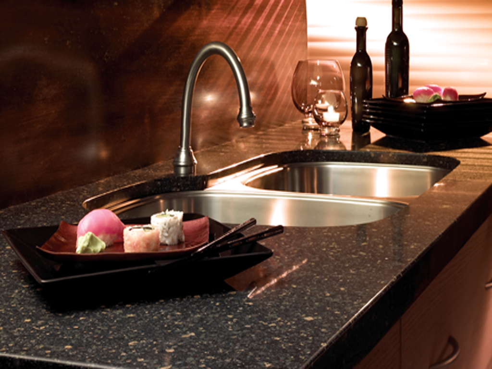

Galerija
Materiali in izdelki
Izbor naravnega in tehničnega kamna, ki ga obdelujemo — od belega marmorja do dramatičnega oniksa.
Naravni kamen
Marmorji, graniti, onyxi

Bianco CarraraMarmor

BardiglioMarmor

Black & GoldMarmor

Absolute BlackGranit

Azul BahiaGranit

ArcobalenoGranit

AlabastroOniks

AmetistaOniks

JadeOniks

Fantasy BrownKvarcit

Princess WhiteKvarcit

Travertino NavonaTravertin
Tehnični kamen
Silestone — kvarčne površine

Blanco ZeusSilestone

Mont BlancSilestone

CarbonoSilestone

RainforestSilestone
Nagrobniki
Spomeniki iz naravnega kamna

NagrobnikNaravni kamen

Po meriPoljubna oblika

Obnova in napisiNagrobna oprema
Celotne galerije materialov, izdelkov, kuhinjskih pultov Silestone in nagrobnikov si lahko ogledate tudi v razstavnem prostoru. Za ogled se dogovorite prek povpraševanja.